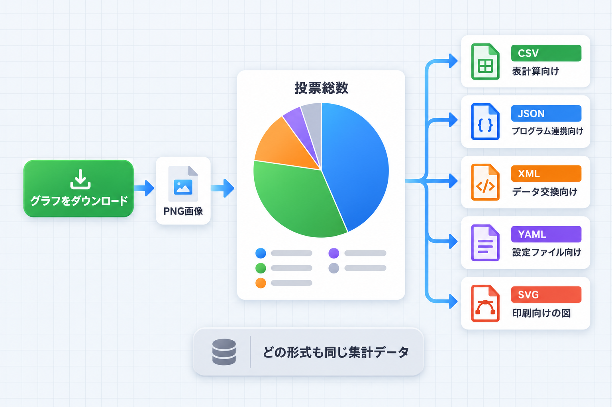

グラフとダウンロード
投票結果は円グラフで表示されます。グラフは画像として保存でき、集計データは CSV・JSON・XML・YAML・SVG の5つの形式で取得できます。このページでは、グラフの見方と各ダウンロードの違いを説明します。

グラフが表示される場所
| 場所 | グラフ |
|---|---|
| 記事の投票ブロック（投票前） | 小さなプレビュー（凡例・割合の数字なし） |
| 記事の投票ブロック（結果を拡大・投票後・投票済み・受付終了） | 大きなグラフ |
| データセットの詳細ページ | ページ内の投票ブロックに表示（状態は記事と同じ）。あわせて集計表を表示 |
グラフは常に最新
グラフはページを開いたときに最新の集計を読み込んで描きます。ページがキャッシュされていても、グラフの数字は最新です。
大きなグラフの見方

| 部分 | 内容 |
|---|---|
| 上部の文字 | 設問（長い場合は2行まで） |
| 扇形の数字 | 各選択肢の割合（%）。ごく小さい割合は表示しません |
| 凡例 | 「選択肢名 (N票 / xx.x%)」。15文字を超える選択肢名は「...」で省略され、マウスを載せると全文が表示されます |
| 投票総数 N 票 | 全選択肢の合計 |
| © サイト名 年 | グラフの出典表記 |
| 色 | 選択肢の順に決まった色で塗り分けます（基本設定のカラーテーマでは変わりません） |
グラフをダウンロード
緑の「グラフをダウンロード」ボタンを押すと、表示中のグラフを PNG 画像として保存します。ファイル名は「chart_（番号）_（サイト名）.png」です。サイト名のうち半角英数字・「_」「-」以外の文字（日本語など）は1文字ずつ「_」に置き換わり、英字は小文字になります（例: 「SEO対策研究室」→ chart_12_seo_____.png）。サイト名が空のときは site になります。
使い道
SNS への投稿や資料への貼り付けに使えます。グラフには出典（© サイト名 年）が入っています。
フォーマット別データダウンロード
大きなグラフの下にある「📊 フォーマット別データダウンロード」（説明「同じアンケートデータを異なるファイル形式で取得できます」）から、5つの形式のページを新しいタブで開けます。各ページの「（形式） Download」ボタンでファイルを保存できます。
| リンク | 画面の説明 | 向いている使い方 |
|---|---|---|
| CSV形式 | Excel・スプレッドシート用 | 表計算ソフトで開いて集計・加工する |
| JSON形式 | API・プログラム連携用 | プログラムやツールで読み込む |
| XML形式 | システム間データ交換用 | XML に対応したシステムに取り込む |
| YAML形式 | 設定ファイル・自動化用 | 人が読みやすいテキストとして扱う |
| SVG形式 | ベクターグラフ・印刷用 | 拡大しても粗くならない円グラフの図として使う |
リンクの枠と文字の色は、基本設定の「カラーテーマ」に合わせて変わります。各ファイルの中身は データセットページ で説明しています。
ファイルが作られていないとき
データファイルがまだ作られていない場合でもリンクは表示され、開くと「見つかりません」のページになります。基本設定の「メンテナンス」で「データファイルを一括生成する」を押すと作られます。
グラフの部分に表示されるメッセージ
| メッセージ | 原因 | 対処 |
|---|---|---|
| まだ投票がありません。 | 1票も無い | — |
| グラフ描画に必要なライブラリ(Chart.js)が読み込まれていないか、初期化に失敗しました。 | グラフを描く部品をインターネット上の配信元から読み込めなかった | 通信環境、広告ブロック等の拡張機能、サイトのスクリプト最適化の設定を確認する |
| グラフデータの形式に問題があります。 | 選択肢と票数の数が合わない | 編集画面で一度「更新」を押して保存し直す |
| グラフオプションの設定中にエラーが発生しました。／グラフの表示に失敗しました。開発者コンソールで詳細を確認してください。 | グラフ表示中の予期しないエラー | ページを再読み込みする。ほかのプラグインやテーマのスクリプトとの組み合わせも確認する |
| グラフ要素が見つからず、ダウンロードできませんでした。／グラフ画像の生成またはダウンロード中にエラーが発生しました。 | 「グラフをダウンロード」が失敗した | グラフが表示されてから押す。別のブラウザで試す |